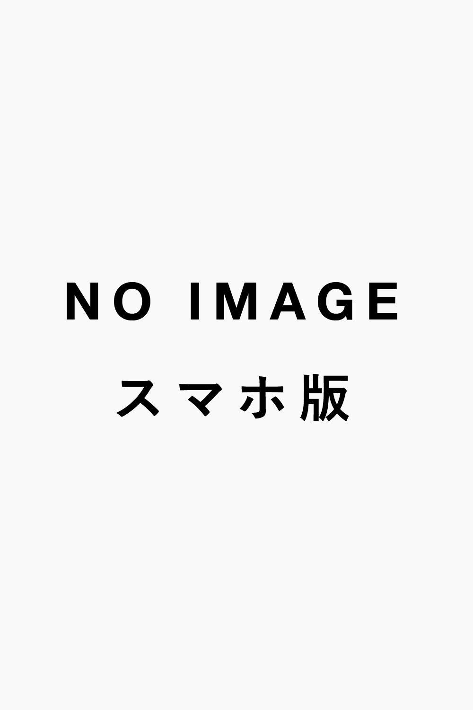
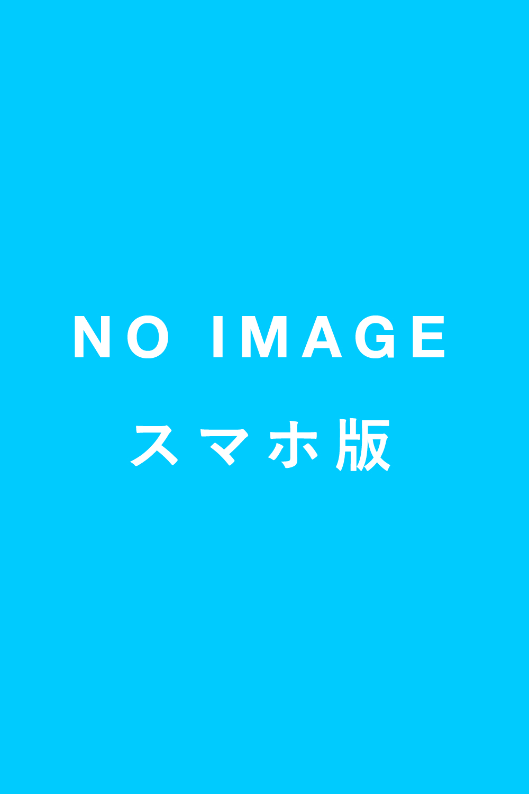
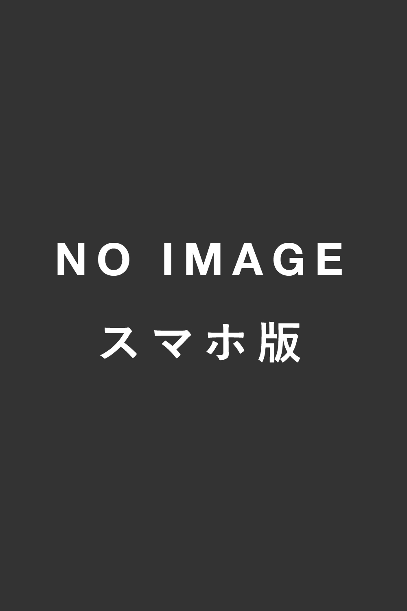

- 

- 
- 
How to makeどうやって作ってるの？
モテ診断AIは「自然言語処理AI」という人工知能を使い、異性からどの程度アクション (ファボやリプライなど) されているのかを調べて偏差値を出しています。さらに分析した情報を元にアカウントの傾向を出し、キャラクターを出現させています。
Know moreもっとシステムを知りたい方
私たちDIPTECHが開発を行っているディップ株式会社では、現在エンジニアインターン生を募集しています。実際にこのサービスの裏側を作っているエンジニアと話して見たい方や、アルゴリズムの詳細などを知りたい方、またはエンジニア以外にも人工知能に興味がある方は是非オフィスまでいらしてください。
私たちDIPTECHはdip株式会社 次世代事業準備室 インターン生によるチームから 生まれたソーシャルリクルーティングサービスです。
制作チームを見るモテ診断AIは個々のツイッターアカウントを解析する事で、異性からどの程度「モテているのか」が偏差値でわかります。
診断ページへ